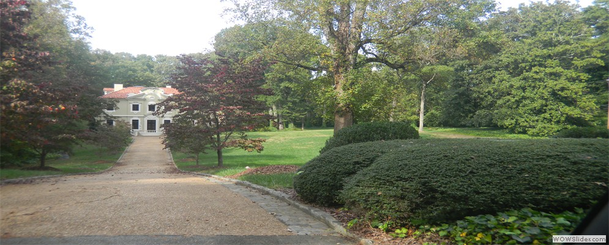
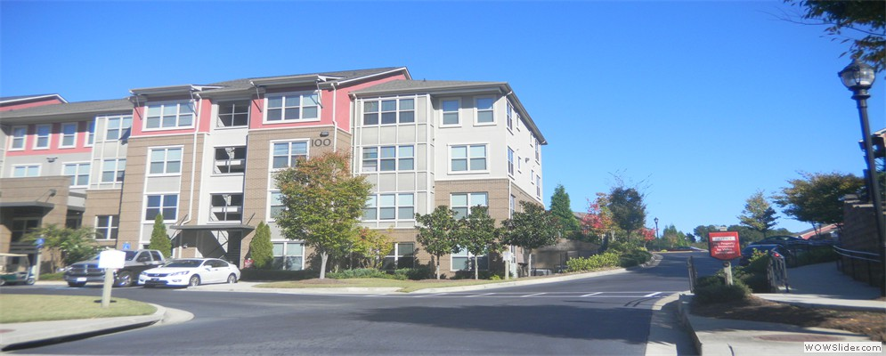
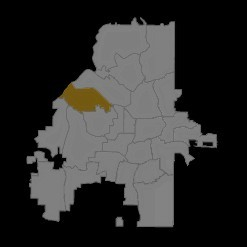
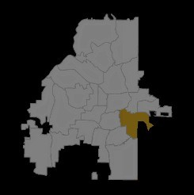

"This is an important and much-needed tool to assess the health and well-being of residents in Atlanta neighborhoods. We believe this tool will help us both identify residents in need of homeless services and find appropriate neighborhoods that meet their specific needs."
- Protip Biswas, Executive Director, Regional Commission of Homelessness, United Way
"Recognizing that the places in which we live, learn, work, play and pray have an impact on our health - the Atlanta Neighborhood Quality of Life and Health (NQOLH) Project provides an exciting and important one stop shop tool for concerned citizens, leaders, planners, public health practitioners, and decision-makers to aid in designing healthier communities."
- Jenelle Holder Williams, Program Manager, Georgia Healthy Communities Initiative, Georgia Department of Public Health

NPU A is known for its West Paces Ferry classical houses and for having a number of private schools, including Pace Academy pictured here.
NPU B ranks high in quality of life and health in part because of the parks and public spaces that are amenable to physical activity.
NPU C ranks 9th in nutrition. The Atlanta Food Truck Park & Market is a well-known attraction in this NPU.
NPU D ranks 8th in overall health. This NPU is home to Piedmont West Medical Office.
NPU E provides a good amount of parks access considering its centrality in the city. It is home to Piedmont Park, often dubbed “Atlanta’s Central Park.”
NPU F ranks highest in quality of life largely because of its excellent retail access and other amenities.

NPU G ranks 1st in housing largely because its rent affordability ratio is so low, 0.13.
NPU I is home to the Cascade Springs Nature Preserve. Although this NPU has relatively low morbidity rates and good public safety, it scores low on walkability (28/100 pts).
NPU J ranks 25th for overall quality of life, but it has great potential because of its proximity to Bellwood Quarry, the site of the future BeltLine Quarry Park.
Retail access in NPU K is 68.1%, and the NPU is 6th in the amenities ranking.
Low food access is prevalent in NPU L (24.2%), but the English Avenue Urban Farm is helping to improve quality of life for the residents in this NPU.
This medium socioeconomicconditions (SEC) NPU has high quality of life, in part because of its extensive access to transportation and short commute times.
An area with high socioeconomic conditions, NPU N has high quality of life and high health, and ranks first overall in Amenities, with 94% of its residents within 1/2 mile radial distance of a park.
The Edgewood Retail District is located in NPU O, where retail access is 78.6%.
NPU P ranks highest for Housing among NPUs of similar socioeconomic status, but has low access to amenities and ranks poorly for walkability.
NPU Q is home to the Southwest Arts Center. This NPU ranks first for Public Safety but last for Amenities and Economy.
Adams Park is a central amenity for NPU R. This NPU has high homeownership affordability for its socioeconomic conditions but also has high mortality rates.
The Greenwood Cemetery is a focal destination in NPU S. Although 17% of its population experiences low food access, NPU S ranks in the top 10 overall for Housing and Transportation.
NPU T has both high Neighborhood Quality of Life (NQoL) and high Neighborhood Health for a low socioeconomic conditions NPU, with good access to amenities such as parks and retail.
Quality of life and health in NPU V are negatively affected by its public safety and transportation ranking, but it ranks very well in amenities because of its high percentage (83.5%) of parks access.

NPU W’s ranking for quality of life and health is positively affected by its good parks access and walkability, attributable to public places and greenspaces like Grant Park.
Atlanta Metropolitan State College is one of several educational resources in NPU X. This NPU ranks highest among NPUs of similar socioeconomic conditions, but and high overall for housing, but is in the bottom five for transportation.
NPU Y counts South Bend Park as one of its major landmarks. Its population benefits from good transportation for its socioeconomic conditions, but experiences low food access and relatively high mortality rates.
NPU Z ranks highest for economy among NPUs of similar socioeconomic conditions, but ranks poorly for physical activity and mortality.